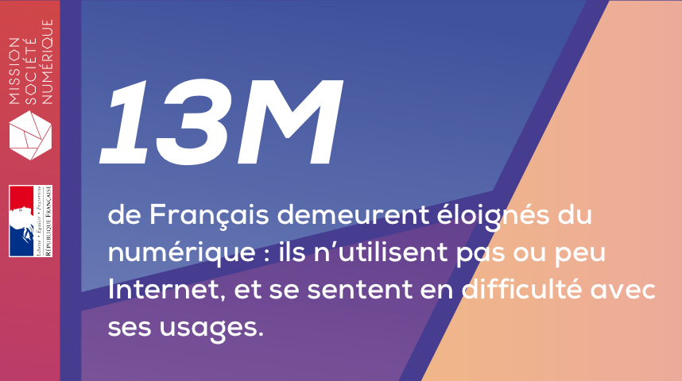

Le numérique ne doit pas être réservé aux plus agiles ni aux plus favorisés, ni aux plus urbains. Chacun doit y trouver les moyens de gagner en autonomie, d’avoir la capacité d’agir, d’entreprendre et de choisir sa vie.
Parce que la réussite de cette ambition ne peut reposer que sur l’alliance de tous, le Gouvernement, les associations d’élus partenaires de la Conférence nationale des territoires, les collectivités et les acteurs locaux, publics ou privés, s’engagent afin d’élaborer conjointement une stratégie nationale pour l’inclusion numérique.
▶▶ Télécharger le dossier de presseEn partant des besoins de la population et en s’appuyant sur les expertises existantes, cette stratégie nationale doit permettre de formaliser des objectifs communs, de fédérer et coordonner les différents acteurs, de mieux définir les rôles de chacun d’entre eux et d’unir les moyens et les efforts de tous, pour rendre l’action collective plus efficace pour les citoyens.
Des acteurs nombreux et divers, publics ou privés, contribuent aujourd’hui à l’accueil et l’accompagnement des personnes en difficulté face au numérique, chacun à leur échelle : les lieux spécifiquement dédié à la médiation numérique, bien sûr, les services déconcentrés de l’Etat, les organismes de protection sociale (vieillesse, maladie, chômage, famille, etc.), les collectivités territoriales, mais aussi des centres sociaux, des associations, des acteurs de l’économie sociale et solidaire, des bureaux de Poste, des organismes caritatifs, des entreprises de services à la personne, etc. Nombre d’initiatives et d’expériences réussies existent, mais sont encore insuffisamment documentées, connues et reproduites.
En réunissant pour la première fois toutes les forces vives et acteurs œuvrant pour l’inclusion numérique au sein de groupes de travail, le Gouvernement fait le pari de l’intelligence collective et de la fédération des expertises pour construire un langage et des référentiels communs, ainsi que les outils nécessaires au déploiement d’une action inclusive dans tous les territoires.
La première priorité d’action consiste à mieux connaître, pour mieux les atteindre et les orienter, les bénéficiaires cibles. Un premier groupe de travail permettra de définir les catégories d'usagers en situation d'exclusion numérique, et de construire les parcours d'orientation adaptés à chacun de ces publics, en fonction de leurs freins et de leurs motivations, de leur niveau de compétence, mais également de leurs points d’entrée dans les territoires.
Il s’agit ainsi de construire des outils communs, permettant à chaque territoire d’élaborer ensuite des solutions adaptées à ses habitants et à ses spécificités :
La seconde priorité consiste à qualifier et structurer l’offre d’accompagnement au numérique dans les territoires, afin d’améliorer sa visibilité et de mieux répondre aux différents besoins des usagers et publics cibles.
Pour cela, le groupe de travail correspondant aura notamment pour mandat :
Parce qu’il nous faut mieux allouer les ressources disponibles et assurer la pérennité de l’offre d’accompagnement, un troisième groupe de travail, appuyé par une mission d’inspection générale, aura pour objectifs de :
Sur la base des outils, parcours et référentiels communs produits par les groupes de travail, la mise en œuvre de la stratégie nationale d’inclusion numérique se veut ancrée dans les territoires, afin que les solutions soient adaptées à leurs habitants, ainsi qu’au tissu d’acteurs présents à l’échelon local.
En se coordonnant à l’échelon départemental, les collectivités devront identifier les types de publics en difficultés avec le numérique et l’offre d’accom-pagnement présents sur leurs territoires, puis construire ensemble la solution la plus pertinente.
Pour les y aider, un quatrième groupe de travail, transverse, aura pour mandat de recenser les stratégies numériques inspirantes à différents échelons (métropoles, intercommunalités, départements, régions), de formaliser les modèles de gouvernance territoriale qui fonctionnent, ainsi que de proposer une méthode permettant le passage à l’échelle des initiatives territoriales : bonnes pratiques, résolution des irritants, conditions de réussite, etc.
Notre objectif est qu’à l’été 2018, chaque territoire soit en mesure de déployer des parcours d’accompagnement et de formation au numérique en phase avec les besoins locaux, partout et pour tous.
La Mission Société Numérique coordonne les différents groupes de travail.
Vous souhaitez participer à l'un de ceux-ci ?
CONTACTEZ-NOUS